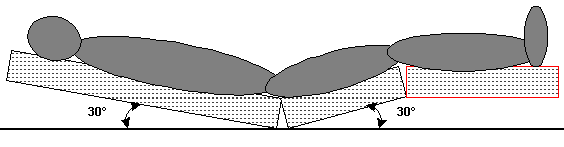
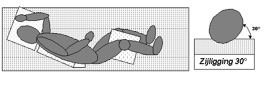
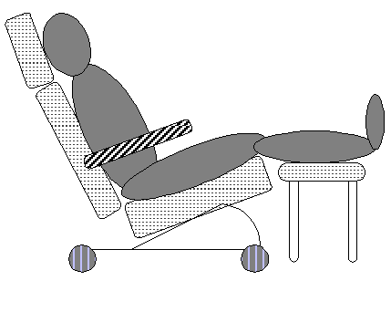
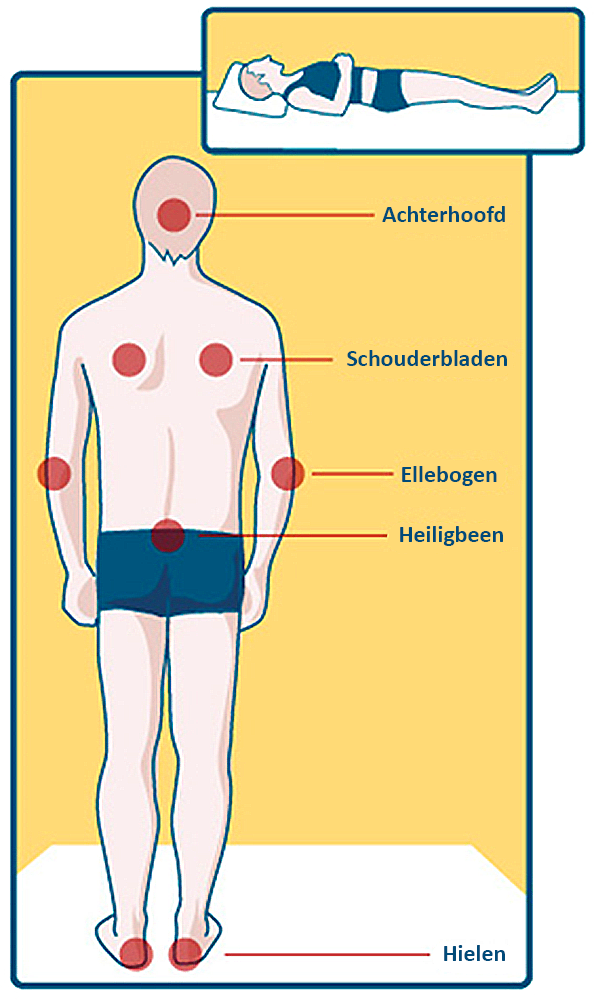
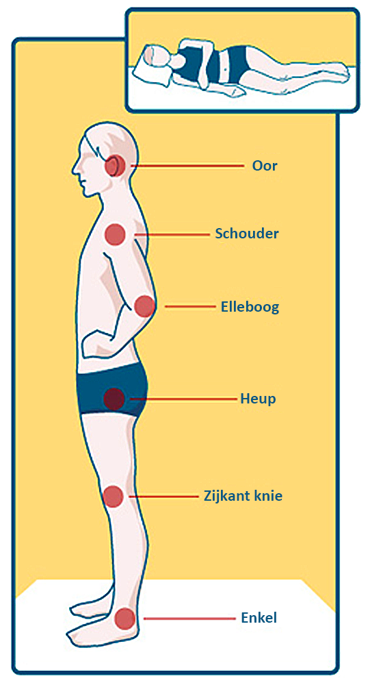
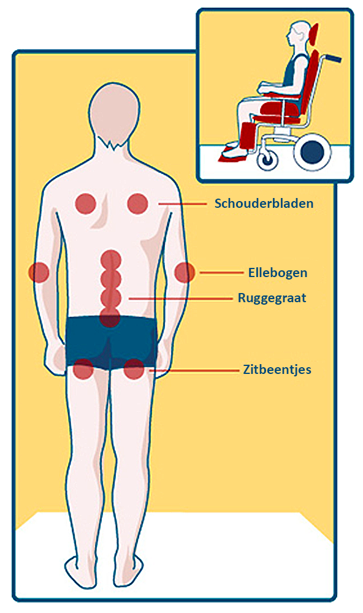

Categorieën
Decubitus preventie
Juiste houdingen
Categoriën
Decubitus is een gelokaliseerde beschadiging van de huid en/of onderliggend weefsel meestal ter hoogte van een botuitsteeksel, als gevolg van druk, of druk in samenhang met schuifkracht.
Decubitus wordt onderverdeeld in een viertal categorieën
- Categorie 1
Niet-wegdrukbare roodheid
- Categorie 2
Aantasting gedeeltelijke dikte huid of blaar
- Categorie 3
Aantasting volledige dikte huid
- Categorie 4
Aantasting volledige dikte weefsel
Categorie 1
Er kan sprake zijn van een verkleuring van de huid, warmte, oedeem, verharding en pijn. Een donker gekleurde huid vertoont mogelijk geen zichtbare verkleuring.
Categorie 2
Gedeeltelijk verlies van een laag van de lederhuid (dermis) waardoor een oppervlakkige open wond zichtbaar wordt met een rood, roze wondbodem, zonder wondbeslag.
Blaarvorming
Categorie 3
Verlies van de volledige huidlaag. Subcutaan vet kan zichtbaar zijn, maar bot, pezen en spieren liggen niet bloot. Wondbeslag kan aanwezig zijn. Ondermijning of tunneling kunnen aanwezig zijn.
Categorie 4
Verlies van een volledige weefsellaag met blootliggend bot, pezen of spieren. Een vervloeid wondbeslag of necrotische korst kan aanwezig zijn. Meestal is er sprake van ondermijning of tunneling.
Decubitus preventie
Risico inventarisatie
Voor een risico inschatting van decubitus dient:
- Een risicoscorelijst te worden ingevuld bij opname, bij tussentijdse veranderingen en
volgens afdelingsafspraak.
Algemene maatregelen
- Bij decubitus categorie 1-2, raadpleeg de aandachtsvelder decubitus van de afdeling.
- Bij decubitus categorie 2 (groot letsel), 3 en 4 consulteer de wond-decubitus verpleegkundige en diëtist.
- Let op dat de patiënt bij decubitus categorie 3 en 4 nooit op deze decubitus zit of ligt.
Preventieve maatregelen
- Voorlichting
- Informeer de patiënt mondeling en geef hem/haar de voorlichtingsfolder decubitus
- Huidverzorging
- Risicopatiënten dagelijks huid- en drukpuntcontrole
- Voorkom maceratie van de huid tgv incontinentie / transpiratie door Cavilon / zinkolie / Proshield.
- Droge huid voorzichtig insmeren en niet wrijven
- Regelmatig incontinentiemateriaal verschonen
- Dagelijks schoon ondergoed en kleding (vermijd plooien)
- Voorkom decubitus door liggen op katheters, drains en druk van O2 brilletje
- Badstof sokken drageb
- Voeding
- Voedingstoestand inschatten (Snaqlijst invullen) Zo nodig diëtiste inschakelen
- Vochtletselpreventie
- Voorkom huid op huidcontact, houd huidplooien droog en pas dagelijkse huidzorg toe
Juiste houdingen
Aandacht voor de onderlaag
- de onderlaag moet glad, schoon en droog zijn
- Bij gebruik van een hoeslaken mag geen "hangmateffect" optreden
- Wees terughoudend met extra onderlagen
Houding in bed
- Pas wisselliging om de twee uur toe op normaal matras of op antidecubitus (lucht)matras om de vier uur.
- Liggende houding: Semi-Fowler houding 30%

- Leg hielen altijd vrij, ook op luchtmatras dmv groot kussen onder de kuiten.
- Zijligging 30 graden houding

- Wanneer wisselliging alleen niet afdoende is, gebruik een drukreducerend matras. Voor de inzet van deze systemen, lees richtlijn.
- Patiënt verplaatsen in bed, volg tilprotocol (gebruik glijzeil)
- Niet schuiven over de onderlaag
Houding in rolstoel

- Patiënt achterover laten zitten
- Met benen op een bankje 90 graden houding
- Gebruik drukverlagende kussens
Meest voorkomende plaatsen van druk- en/of schuifkrachten
Rugligging
Zijligging
Zitten